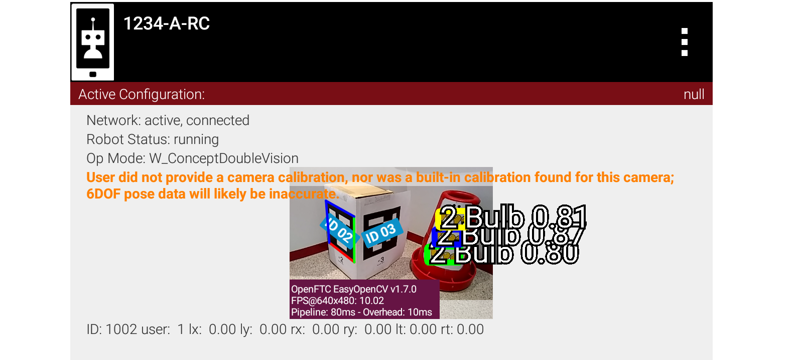
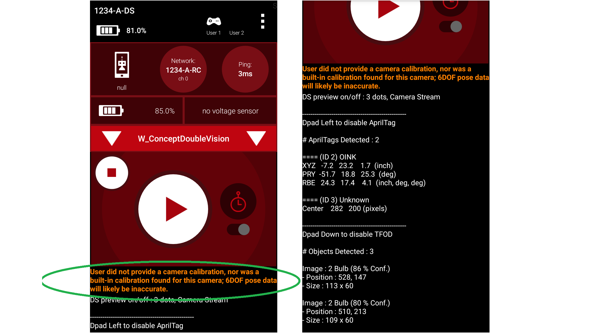
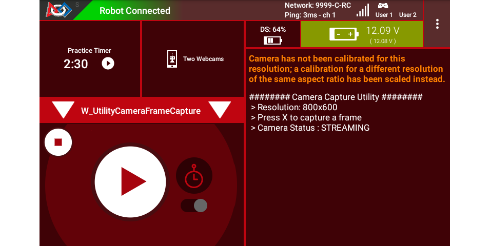

Camera Calibration
What is a camera calibration and why is it needed?
Cameras are composed of many different components that can introduce variability in the actual image that a camera ultimately “sees”. Camera calibration is a process that mathematically models how a camera & lens combination ultimately sees the world, for example how wide the field of view is. Calibrating your camera is a must if you desire to use it for high-precision tasks, such as performing precision measurements using the camera or obtaining accurate 6DOF pose data from fiducial marker systems like AprilTags.
“Without a camera calibration, the best you could achieve is being able to turn towards the target. Range information would be incorrect.” – FIRST Tech Challenge navigation expert @gearsincorg
The calibration values are called lens intrinsics. It’s important to note that they are not only specific to the camera and lens, but also specific to the resolution used on a particular camera as well! A webcam that offers 18 resolutions wants a separate calibration for each one.
Does your camera already have calibration data?
The SDK ships calibration data for a limited number of webcams and resolutions, so check this list before calibrating anything yourself:
Webcam |
Calibrated resolutions |
|---|---|
Logitech HD Webcam C270 |
640x480 |
Logitech HD Webcam C310 |
640x480, 640x360 |
Logitech HD Pro Webcam C920 |
640x480, 800x600, 640x360, 800x448, 864x480, 1920x1080 |
Microsoft Lifecam HD 3000 (v1 and v2) |
640x480 |
goBILDA (SKU 3122-0003-0001) |
640x480, 800x600, 1280x720, 1920x1080 |
If your camera and resolution are both on this list, you do not need to calibrate. If your camera is on the list but your resolution is not, you can either switch to a calibrated resolution or generate your own values.
Note
This table can fall behind the SDK. The authoritative source is the SDK file
builtinwebcamcalibrations.xml; in Android Studio, find it under the
RobotCore, res, xml subfolders.
Android device cameras also need calibration data for good pose estimates. The SDK provides no lens intrinsics for these cameras.
Capturing calibration frames
Every calibration tool works from a set of photographs taken by the camera you are calibrating, at the resolution you are calibrating. The SDK provides a utility OpMode to capture them.
Create an OpMode from the Java Sample UtilityCameraFrameCapture.java.
Android Studio teams can find this utility program in the External Samples
folder; OnBot Java teams can copy it into their teamcode folder. Modify the
parameters at the top – most importantly the resolution – according to your
needs.
FTC Blocks teams can duplicate this OpMode, requiring a custom myBlock only for
the method saveNextFrameRaw(). At some future time, this Java method may
become available as a regular Block, avoiding the need for a myBlock. Learn more
about myBlocks here:
The OpMode captures a camera frame (image) and stores it on the Robot Controller with each press of the gamepad button X (or Square). To illustrate, it stores the first two captured images as:
VisionPortal-CameraFrameCapture-000000.pngVisionPortal-CameraFrameCapture-000001.png
The numbering restarts for each run of the OpMode. Move each set of frames to its own folder on your computer, to avoid overwriting the previous run’s results.
To retrieve the images, connect your Robot Controller device to your computer
with a USB cable. The files are in the root of the USB storage, with names
prefixed by VisionPortal-. Mac OSX users may need special software for
Android file transfer.
Choosing a calibration tool
There are many methods to calibrate cameras, including OpenCV, MATLAB, MRCAL etc.
For advanced teams, using MRCAL is likely the best option - it is a tool developed by NASA JPL that provides extensive data on how good your calibration is and what goes into the numerical optimization to arrive at the optimal parameters.
For the rest of us, the walkthrough below explains how to calibrate your camera using 3DF Zephyr, which is extremely easy to use and can provide reasonable results.
Warning
3DF Zephyr is a Microsoft Windows 64-bit application. It is not supported on 32-bit versions of Windows, nor is it supported on Mac or on Linux platforms. Teams on those platforms will need MRCAL or another calibration program.
Calibrating with 3DF Zephyr
Download and install 3DF Zephyr Free Edition.
In 3DF Zephyr, go to:
Utilities –> Images –> Camera Calibration
and follow the instructions. Use the frame capture OpMode described above to take the pictures.
Press the Add Images button in 3DF Zephyr and point it to the images you copied from the Robot Controller.
Run the calibration target analysis in 3DF Zephyr; when it is complete, it will provide you with
fx, fy, cx, cywhich are the needed calibration parameters to be applied to yourAprilTagProcessor.
Calibration warnings from the SDK
Running ConceptDoubleVision (or any AprilTag Sample OpMode) with an
uncalibrated camera gives the following error message on both devices:
{kind=link}

Warning of no camera calibration provided
{kind=link}

Right-hand image shows that the warning still allows detections.
The SDK gives a different warning that covers a special case, where the OpMode uses:
a camera model for which the SDK does have lens intrinsics, and
a user-specified resolution for which
the SDK does not have lens intrinsics, and
(b) the aspect ratio matches that of lens intrinsics that the SDK does have (for that camera model).
In such a case, the SDK scales the results in an attempt to estimate AprilTag pose.
For example, changing the Logitech C270 resolution from 640x480 to 800x600 (also 4:3 aspect ratio), gives this warning on the RC preview and the DS screen:
{kind=link}

Warning about no calibration at this resolution
The above warning advises the user of this situation, with the opportunity to accept/adjust the scaled estimate or provide actual calibration values.
Neither warning affects the function of capturing and storing camera frames.
Questions, comments and corrections to westsiderobotics@verizon.net